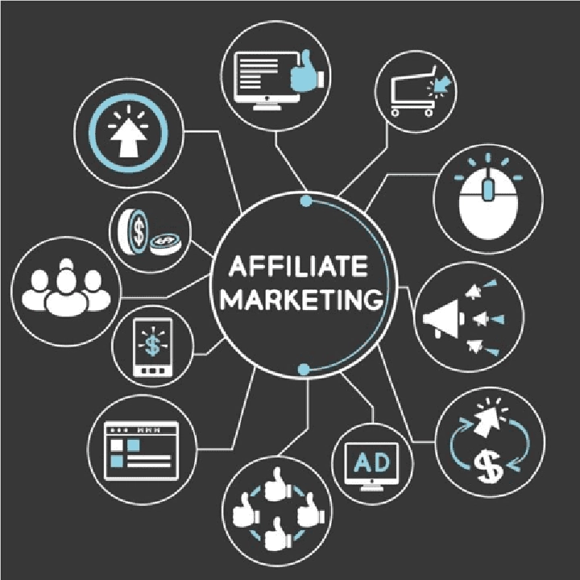

Affiliate Marketing – Trào lưu kinh doanh thời đại số
Thời đại số đang định nghĩa lại cách con người tạo ra thu nhập. Chỉ với một chiếc điện thoại hoặc máy tính kết nối Internet, hàng triệu người đã và đang xây dựng sự nghiệp cho riêng mình — không cần văn phòng, không cần vốn lớn, chỉ cần ý tưởng, sự kiên trì và khả năng kết nối.
Trong số những mô hình kinh doanh nổi bật của kỷ nguyên này, Affiliate Marketing (tiếp thị liên kết) nổi lên như một hiện tượng. Nó không chỉ là cách kiếm tiền online, mà còn là biểu tượng cho tinh thần tự do và sáng tạo – nơi mọi người có thể biến sức ảnh hưởng và nội dung của mình thành giá trị thật.
Hôm nay hãy cùng TrithucWorld tìm hiểu về mô hình kinh doanh này nhé!
1. Affiliate Marketing là gì?
Mặc dù đã xuất hiện ở Việt Nam từ khoảng hơn chục năm trước nhưng hiện nay khi công nghệ ngày càng phát triển mạnh mẽ, Affiliate Marketing mới dần trở nên phổ biến rộng rãi.
Affiliate Marketing (tiếp thị liên kết) là mô hình kinh doanh trong đó người tiếp thị (publisher) quảng bá sản phẩm hoặc dịch vụ của nhà cung cấp (merchant) thông qua các kênh trực tuyến như website, blog, mạng xã hội hoặc video. Khi khách hàng thực hiện một hành động cụ thể như mua hàng, đăng ký tài khoản, hay tải ứng dụng qua đường link giới thiệu (affiliate link), người tiếp thị sẽ nhận được một khoản hoa hồng tương ứng.
Hiểu đơn giản hơn, đây là hình thức “giới thiệu có thưởng” trong môi trường Internet: Bạn giúp thương hiệu bán được hàng – bạn được trả tiền.
Điểm đặc biệt của mô hình này là sự cộng sinh giữa doanh nghiệp và người sáng tạo nội dung. Doanh nghiệp không cần chi phí quảng cáo rủi ro, vì chỉ phải trả tiền khi có kết quả thật. Người tiếp thị thì được hưởng lợi từ khả năng chia sẻ, sáng tạo nội dung, hoặc đơn giản là lan tỏa những sản phẩm mình tin tưởng.
Ngày nay, Affiliate không còn là “sân chơi của dân công nghệ” nữa. Nó mở rộng cho mọi đối tượng, từ blogger, YouTuber, KOL, KOC, đến người làm nội dung cá nhân. Mỗi bài viết review, video unbox, hay dòng chia sẻ chân thành trên mạng xã hội đều có thể trở thành một kênh kiếm tiền hợp pháp và bền vững.
Hiện này, nhiều người - đặc biệt là giới trẻ - xem Affiliate là một nghề nghiệp chính thức, giúp họ mang lại thu nhập hiệu quả.
Ví dụ: một blogger công nghệ viết bài đánh giá về chiếc điện thoại mới có thể đính kèm link mua hàng từ Shopee hoặc Amazon. Khi người đọc tin tưởng, nhấn vào link và đặt mua, blogger đó sẽ nhận được phần trăm hoa hồng từ giao dịch. Sự lan tỏa ấy tự nhiên, đáng tin hơn bất kỳ quảng cáo nào, và chính điều đó tạo nên sức mạnh của tiếp thị liên kết.
Affiliate Marketing vì thế không chỉ là một công cụ kiếm tiền, mà còn là một mô hình hợp tác dựa trên niềm tin và giá trị — nơi người chia sẻ và người mua cùng gặp nhau ở điểm chung: sự tin tưởng vào sản phẩm.
2. Cách hoạt động của Affiliate Marketing
Mô hình Affiliate Marketing thường bao gồm bốn bên chính: nhà cung cấp (Merchant), người tiếp thị liên kết (Publisher), mạng lưới liên kết (Affiliate Network) và khách hàng (Customer). Toàn bộ quy trình diễn ra theo các bước đơn giản như sau:
-
Người tiếp thị đăng ký chương trình affiliate của một thương hiệu hoặc qua mạng lưới trung gian. Sau khi được chấp thuận, họ sẽ nhận được đường link hoặc mã theo dõi (tracking link).
-
Người tiếp thị quảng bá sản phẩm hoặc dịch vụ thông qua các kênh như website, blog, mạng xã hội, video review hoặc email marketing.
-
Khách hàng nhấp vào link liên kết và thực hiện hành động cụ thể — như mua hàng, đăng ký tài khoản, hoặc tải ứng dụng.
-
Hệ thống affiliate ghi nhận hành động đó thông qua cookie hoặc mã theo dõi, đảm bảo người giới thiệu được tính hoa hồng chính xác.
-
Doanh nghiệp thanh toán hoa hồng cho người tiếp thị dựa trên kết quả (CPS – trả theo đơn hàng, CPL – trả theo lượt đăng ký, CPA – trả theo hành động, v.v.).

Mô hình này mang tính minh bạch, linh hoạt và đo lường được hiệu quả, vì tất cả đều dựa trên dữ liệu thực tế. Chính vì thế, Affiliate Marketing trở thành kênh quảng bá tiết kiệm và hiệu quả, đặc biệt phù hợp với những doanh nghiệp nhỏ hoặc cá nhân sáng tạo nội dung muốn kiếm thu nhập thụ động.
3. Các mô hình phổ biến trong Affiliate Marketing (CPS, CPL, CPA, CPC, CPM)
Affiliate Marketing không chỉ có một cách tính hoa hồng duy nhất, mà được chia thành nhiều mô hình khác nhau tùy vào mục tiêu của chiến dịch và loại hành động mà doanh nghiệp mong muốn từ khách hàng. Dưới đây là 5 mô hình phổ biến nhất mà bất kỳ ai làm affiliate cũng nên hiểu rõ:
1. CPS (Cost Per Sale) – Trả tiền theo đơn hàng
Đây là mô hình phổ biến và minh bạch nhất trong affiliate. Publisher chỉ nhận được hoa hồng khi khách hàng thực sự mua hàng thông qua link liên kết.
Ví dụ: Một blogger giới thiệu sản phẩm mỹ phẩm trên Shopee. Nếu người đọc click link và đặt hàng thành công, blogger đó sẽ nhận được một phần trăm giá trị đơn hàng (ví dụ 5–10%).
➡️ Ưu điểm: dễ đo lường, tránh gian lận.
➡️ Nhược điểm: chỉ hiệu quả nếu người tiếp thị có khả năng tạo niềm tin và thúc đẩy hành động mua hàng.
2. CPL (Cost Per Lead) – Trả tiền theo lượt đăng ký
Ở mô hình này, người tiếp thị nhận hoa hồng khi khách hàng hoàn tất một hành động đăng ký hoặc điền form (chưa cần mua hàng).
Ví dụ: một người làm affiliate quảng bá khóa học online. Khi người dùng click link và để lại thông tin (email, số điện thoại), họ sẽ được tính hoa hồng.
➡️ Mô hình này phù hợp với các doanh nghiệp muốn thu thập dữ liệu khách hàng tiềm năng để tiếp thị sau.
3. CPA (Cost Per Action) – Trả tiền theo hành động
CPA là mô hình tổng quát hơn CPL và CPS. Bất kỳ hành động có giá trị nào do khách hàng thực hiện (mua hàng, đăng ký, tải app, điền khảo sát, v.v.) đều có thể mang lại hoa hồng.
Ví dụ: một app fintech trả tiền cho publisher khi người dùng tải ứng dụng và xác minh tài khoản.
➡️ CPA giúp doanh nghiệp linh hoạt trong việc đo lường hiệu quả, vì mỗi loại hành động có thể mang giá trị khác nhau.
4. CPC (Cost Per Click) – Trả tiền theo lượt nhấp chuột
Đây là mô hình đơn giản, trong đó publisher được trả tiền mỗi khi có người click vào link hoặc banner quảng cáo, bất kể họ có mua hàng hay không.
Ví dụ: một website tin tức đặt banner của sàn thương mại điện tử, và nhận hoa hồng nhỏ (vài trăm đến vài nghìn đồng) mỗi khi người đọc nhấp vào.
➡️ Ưu điểm: dễ bắt đầu, không cần chờ hành động mua hàng.
➡️ Nhược điểm: dễ xảy ra click ảo, nên cần kiểm soát chất lượng traffic chặt chẽ.
5. CPM (Cost Per Mille) – Trả tiền theo 1.000 lượt hiển thị
Khác với các mô hình trên, CPM tính tiền dựa trên số lượt hiển thị quảng cáo (1.000 lượt xem được tính là 1 “mille”).
Ví dụ: nếu bạn đặt banner quảng cáo trên website có lượng truy cập lớn, bạn có thể nhận tiền chỉ nhờ lượng người nhìn thấy quảng cáo, không cần họ click vào.
➡️ CPM thường được áp dụng cho các chiến dịch branding (nhận diện thương hiệu) thay vì bán hàng trực tiếp.
Tùy theo mục tiêu của doanh nghiệp và khả năng của publisher, mỗi mô hình sẽ mang lại lợi ích khác nhau. Người làm affiliate chuyên nghiệp thường kết hợp nhiều mô hình cùng lúc — vừa tạo thu nhập đa dạng, vừa tối ưu hóa tỷ lệ chuyển đổi (conversion rate) trên từng kênh quảng bá.
4. Hướng dẫn bạn cách bắt đầu với Affiliate Marketing (từng bước cụ thể)
Affiliate Marketing không đòi hỏi vốn lớn, nhưng lại đòi hỏi sự kiên trì, hiểu biết và định hướng rõ ràng ngay từ đầu. Nhiều người thất bại không phải vì thiếu khả năng, mà vì bước vào với tâm thế “thử cho biết” thay vì thật sự nghiêm túc. Dưới đây là các bước cơ bản giúp bạn bắt đầu hành trình làm tiếp thị liên kết một cách bài bản và bền vững.
Bước 1: Xác định lĩnh vực (niche) phù hợp
Trước hết, bạn cần chọn một chủ đề hoặc lĩnh vực mà mình hiểu rõ và có đam mê — đó có thể là công nghệ, làm đẹp, mẹ & bé, tài chính cá nhân, hoặc du lịch. Một niche tốt là nơi bạn có thể tạo ra nội dung giá trị, chia sẻ thật lòng và lâu dài.
Đừng chọn niche chỉ vì “hoa hồng cao”. Hãy chọn lĩnh vực mà bạn có thể xây dựng niềm tin và tiếng nói riêng. Niềm tin là yếu tố khiến người đọc nhấn vào link của bạn, chứ không phải banner lấp lánh hay lời quảng cáo hoa mỹ.
Bước 2: Nghiên cứu thị trường và chọn sản phẩm
Sau khi xác định lĩnh vực, hãy dành thời gian tìm hiểu xem khách hàng của bạn đang cần gì, gặp vấn đề gì, họ tìm kiếm gì trên mạng. Khi hiểu được nỗi đau (pain point) của họ, bạn sẽ biết nên quảng bá sản phẩm nào.
Tiếp đến, hãy chọn chương trình affiliate uy tín. Ở Việt Nam có thể kể đến các mạng lưới như Accesstrade, MasOffer, AdFlex, hoặc trực tiếp từ các sàn như Shopee, Tiki, Lazada. Nếu làm quốc tế, bạn có thể tham gia Amazon Associates, ClickBank, hoặc CJ Affiliate.
Bước 3: Xây dựng nền tảng chia sẻ nội dung
Đây là bước quan trọng nhất – bởi dù bạn chọn sản phẩm tốt đến đâu, nếu không có kênh để truyền tải thì sẽ không ai thấy. Bạn có thể bắt đầu bằng:
-
Blog cá nhân hoặc website review: phù hợp nếu bạn thích viết và muốn phát triển SEO.
-
Kênh YouTube hoặc TikTok: nếu bạn tự tin thể hiện qua hình ảnh, giọng nói, video hướng dẫn.
-
Fanpage, nhóm Facebook, Instagram, hoặc Telegram: nơi bạn có thể chia sẻ nhanh các mẹo, link giảm giá, hoặc review ngắn.
Hãy nhớ, nội dung là linh hồn. Mỗi bài viết, video hay status cần mang giá trị thật: giúp người đọc hiểu rõ sản phẩm, tránh rủi ro, hoặc chọn đúng thứ họ cần. Khi bạn mang lại giá trị thật, doanh thu sẽ tự nhiên mà đến.
Bước 4: Tối ưu nội dung và đo lường hiệu quả
Khi đã có nền tảng, hãy học cách tối ưu hoá nội dung: đặt link hợp lý, thêm lời kêu gọi hành động (CTA), sử dụng hình ảnh, video, và trải nghiệm cá nhân để tăng độ tin cậy.
Đồng thời, bạn nên theo dõi hiệu suất chiến dịch qua dashboard của mạng lưới affiliate: bao nhiêu click, bao nhiêu đơn, tỉ lệ chuyển đổi, nguồn traffic nào hiệu quả nhất. Dữ liệu là kim chỉ nam giúp bạn điều chỉnh nội dung, thử nghiệm tiêu đề, và cải thiện kết quả từng ngày.
Bước 5: Xây dựng thương hiệu cá nhân và niềm tin
Affiliate Marketing bền vững không nằm ở “mánh” hay “chiêu” mà ở niềm tin người đọc dành cho bạn. Hãy chia sẻ thật, review thật, và chỉ giới thiệu sản phẩm mà bạn tin tưởng. Khi bạn trở thành người có tiếng nói đáng tin trong lĩnh vực của mình, mỗi link bạn chia sẻ đều có giá trị.
Thương hiệu cá nhân không thể xây trong ngày một ngày hai, nhưng một khi đã có — nó sẽ mang lại nguồn thu nhập ổn định và cơ hội mở rộng vô hạn.
Bước 6: Mở rộng quy mô và đa dạng hóa nguồn thu
Khi đã có kết quả nhất định, bạn có thể mở rộng kênh truyền thông, hợp tác với nhiều thương hiệu hơn, hoặc đầu tư vào quảng cáo trả phí để tăng độ phủ. Đồng thời, hãy thử đa dạng hóa mô hình kiếm tiền: bán khóa học, mở cộng đồng riêng, hoặc tự tạo sản phẩm số để bán kèm. Affiliate có thể là khởi đầu, nhưng nó cũng có thể là nền tảng cho sự nghiệp kinh doanh cá nhân lớn hơn nhiều.
Affiliate Marketing không phải con đường dễ dàng, nhưng nếu bạn bước đi đúng hướng và bền bỉ, đó sẽ là hành trình giúp bạn vừa phát triển bản thân, vừa đạt được tự do tài chính thực sự. Bắt đầu từ hôm nay – chỉ cần một lĩnh vực bạn yêu thích và tinh thần chia sẻ giá trị, phần còn lại sẽ đến cùng thời gian.
5. Ưu điểm và nhược điểm của Affiliate Marketing
Giống như mọi hình thức kinh doanh khác, affiliate không chỉ toàn “màu hồng”. Nó có những lợi thế rất lớn, nhưng cũng tồn tại nhiều giới hạn và thách thức mà người mới cần hiểu rõ trước khi bắt đầu.
Ưu điểm
Điều đầu tiên khiến Affiliate Marketing trở nên hấp dẫn chính là rào cản gia nhập cực thấp. Bạn không cần sản xuất sản phẩm, không cần kho hàng, không phải chăm sóc khách hàng hay xử lý đơn hàng — tất cả những việc đó đã có bên cung cấp (merchant) đảm nhiệm. Công việc của bạn chỉ là giới thiệu đúng sản phẩm đến đúng người và tạo niềm tin để họ hành động.
Thứ hai, Affiliate là một mô hình linh hoạt và tự do tuyệt đối. Bạn có thể làm việc ở bất cứ đâu, bất cứ lúc nào, miễn có internet. Một người làm nội dung trên YouTube, một blogger viết review, hay một người có trang mạng xã hội cá nhân đều có thể trở thành publisher tiềm năng. Bạn kiểm soát hoàn toàn cách mình quảng bá: bài viết, video, podcast hay mạng xã hội — tất cả đều có thể tạo ra doanh thu.
Một điểm mạnh khác là khả năng tạo thu nhập thụ động. Khi bạn đã xây dựng được hệ thống nội dung đủ mạnh (ví dụ: blog review, kênh TikTok hướng dẫn mua hàng, hoặc website chia sẻ kinh nghiệm), link affiliate có thể tiếp tục mang lại hoa hồng ngay cả khi bạn đang ngủ. Với chiến lược nội dung tốt, một bài viết duy nhất có thể mang lại lợi nhuận nhiều tháng, thậm chí nhiều năm.
Ngoài ra, Affiliate Marketing còn giúp người làm học được tư duy marketing thực chiến — từ nghiên cứu sản phẩm, hiểu hành vi khách hàng, đến tối ưu tỉ lệ chuyển đổi. Đây là kỹ năng nền tảng cực kỳ giá trị, giúp bạn có thể phát triển sự nghiệp xa hơn trong lĩnh vực digital marketing hoặc kinh doanh online.
Nhược điểm
Tuy nhiên, đằng sau vẻ hào nhoáng ấy là một cuộc cạnh tranh khốc liệt. Hàng ngàn người cùng quảng bá một sản phẩm khiến biên độ lợi nhuận bị thu hẹp, và để nổi bật, bạn cần đầu tư nghiêm túc vào nội dung, SEO, hoặc quảng cáo trả phí. Affiliate không phải là “làm giàu nhanh”, mà là một hành trình xây dựng niềm tin và thương hiệu cá nhân dài hạn.
Một khó khăn khác là sự phụ thuộc vào nền tảng và chính sách của nhà cung cấp. Các chương trình affiliate có thể thay đổi tỉ lệ hoa hồng, điều khoản hoặc dừng hoạt động bất cứ lúc nào. Nếu bạn không đa dạng hóa nguồn thu, chỉ dựa vào một thương hiệu duy nhất, bạn có thể mất toàn bộ thu nhập chỉ sau một đêm. Điển hình như Tiktok, Shopee ngày trước chỉ thu khoảng 10% phí hoa hổng sản phẩm (vài năm trước) thì nay con số này đã lên đến 40% khiến nhiều KOLs phải đau đầu.
Ngoài ra, với người mới, việc xây dựng lượng truy cập ban đầu là thách thức lớn nhất. Không có traffic thì không có click, và không có click thì sẽ không có hoa hồng. Việc này đòi hỏi thời gian, chiến lược SEO đúng hướng, và khả năng tạo nội dung thực sự hữu ích.
Cuối cùng, cần nhấn mạnh rằng affiliate cũng tồn tại rủi ro đạo đức. Một số người vì lợi nhuận mà giới thiệu sản phẩm kém chất lượng, khiến người mua mất niềm tin. Khi đó, uy tín cá nhân – thứ quý giá nhất của người làm affiliate – sẽ bị tổn hại nặng nề.
Affiliate Marketing là con dao hai lưỡi: nó có thể mang lại sự tự do tài chính và công việc mơ ước, nhưng cũng có thể khiến bạn kiệt sức nếu chạy theo lợi nhuận ngắn hạn. Người thành công trong lĩnh vực này không phải là người “biết nhiều kỹ thuật nhất”, mà là người thấu hiểu khán giả nhất – bởi cuối cùng, giá trị thật vẫn là yếu tố quyết định mọi chuyển đổi.
6. Kết luận – Từ xu hướng đến cơ hội của thời đại số
Affiliate Marketing không chỉ là một xu hướng nhất thời trong thế giới digital. Nó là sự phản chiếu của thời đại, nơi con người kết nối với nhau không chỉ bằng công nghệ, mà bằng niềm tin và giá trị được chia sẻ.
Chúng ta đang sống trong kỷ nguyên mà mọi cá nhân đều có thể trở thành một “người ảnh hưởng nhỏ” – không cần nổi tiếng, chỉ cần chân thật. Một bài viết hữu ích, một video chia sẻ kinh nghiệm, hay một lời khuyên chân thành cũng có thể giúp người khác chọn đúng sản phẩm, tiết kiệm tiền, và tin tưởng hơn vào điều họ mua. Affiliate Marketing, theo cách đó, không chỉ là “kiếm tiền qua mạng”, mà còn là cách bạn tạo giá trị và kết nối con người thông qua trải nghiệm thật.
Đối với doanh nghiệp, tiếp thị liên kết mở ra cánh cửa đến một hệ sinh thái marketing minh bạch và hiệu quả – nơi chi phí quảng cáo chỉ được trả khi có kết quả thật. Đối với người làm nội dung, đây là một cơ hội để biến đam mê thành thu nhập, biến kỹ năng chia sẻ thành nghề nghiệp bền vững.
Thời đại số đã mở ra vô vàn cơ hội, nhưng cũng thử thách chúng ta về sự kiên trì, trung thực và sáng tạo. Affiliate Marketing, nếu được nhìn nhận đúng, không phải là “nghề tay trái kiếm thêm thu nhập”, mà là một cách sống của những người muốn tạo ảnh hưởng tích cực bằng tri thức và lòng tin.
Và biết đâu, giữa muôn vàn dòng link ngoài kia, chính link bạn chia sẻ – với tâm huyết và sự chân thành – sẽ là nơi bắt đầu cho một hành trình thay đổi cuộc đời.